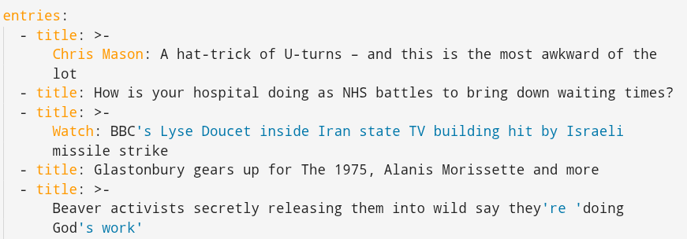

News headlines
This intent reads the top six headlines from the BBC.
It uses the custom integration Feedparser to extract them from a BBC RSS feed - the particular one used here is UK news http://feeds.bbci.co.uk/news/rss.xml, but there are a many others covering different parts of the world.
To use intent scripts you have to install the intent script integration.
Sensor
- platform: feedparser
name: BBC news feed
feed_url: "http://feeds.bbci.co.uk/news/rss.xml"
date_format: "%a, %b %d %I:%M %p"
inclusions:
- title
scan_interval:
hours: 1
Custom sentence
language: "en"
intents:
BbcNewsHeadlines:
data:
- sentences:
- "( give | read | tell | get ) me the [news] ( headlines | top stories)"
- "( what's | what is ) in the [news] ( headlines | top stories)"
- "( give | read | get ) me a news bulletin"
Intent
BbcNewsHeadlines:
action:
- action: script.tts_response
data:
tts_sentence: "OK. {{ states('sensor.wait_phrase') }}"
- delay:
seconds: 5
- action: script.tts_response
data:
tts_sentence: >-
{{ states('sensor.starter_phrase') }} These are the top headlines from the BBC.
{% for entry in state_attr('sensor.bbc_news_feed', 'entries')[:6] %}
{{ entry.title }}.
{% endfor %}
Notes
The value of the Feedparser sensor is the number of headlines available (usualy about 30). The headlines themselves are attributes:

{{ states('sensor.wait_phrase') }} A random phrase asking the user to wait - "Hang on a moment" etc.
This is a good idea because the TTS is a long one. Since TTS messages have to be completely compiled before they can be played there is likely to be a pause of several seconds.
The delay action is needed to to give the "Hang on a moment" TTS time to play. (The same issue sometimes comes up when using media player in automations and scripts.)
{{ states('sensor.starter_phrase') }} A random phrase to start off the response - "OK then" etc.
{% for entry in state_attr('sensor.bbc_news_feed', 'entries')[:6] %}
{{ entry.title }}.
{% endfor %}
Steps through the first six headline attributes. It's important to include a full stop after each headline {{ entry.title }}. so that each one is read as a distinct sentence - this can affect the phrasing of the TTS.